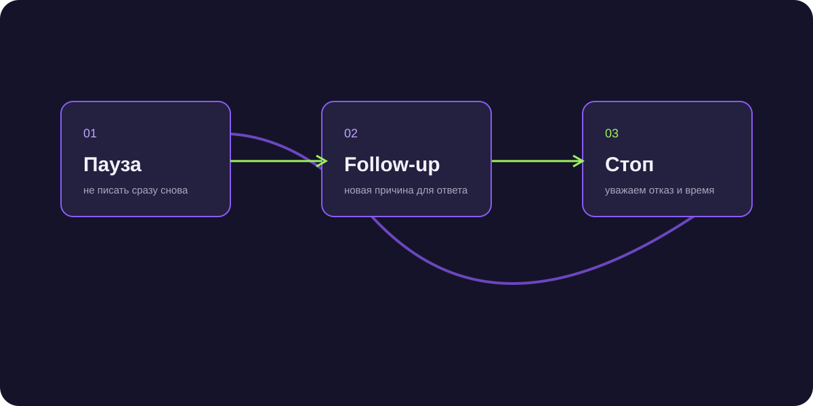

Почему клиенты сливаются в переписке: главные ошибки и решения
Когда бизнес тратит сотни тысяч рублей на маркетинг, а потенциальные заказчики перестают отвечать после первого же вопроса, причина, почему клиенты сливаются в переписке, практически всегда лежит в нарушении психологии общения в мессенджерах.

Короткий ответ
Клиенты сливаются в переписке по трем главным причинам: менеджеры отправляют голый прайс-лист без выявления ценности и привязки к задаче, не заканчивают свои реплики открытыми вопросами (теряют инициативу в диалоге) или отвечают с задержкой в несколько часов. Для исправления ситуации необходимо соблюдать правило обязательного закрывающего вопроса и внедрять своевременный автоматический follow-up.
Шесть фатальных ошибок менеджеров в мессенджерах
Проверьте переписки своего отдела продаж на эти паттерны:
- Называние цены без контекста: клиент спросил «сколько стоит?», менеджер ответил «50 000 ₽» и замолчал. Диалог окончен.
- Сообщение без вопроса в конце: точка в конце сообщения передает инициативу клиенту, и он просто закрывает чат.
- Длинные простыни текста: отправка 5 абзацев с описанием компании вызывает желание «почитать потом», что равносильно «никогда».
- Голосовые сообщения без спроса: аудиосообщения от незнакомых людей вызывают резкое раздражение.
- Медленный ответ: пауза в 40 минут охлаждает интерес, и клиент переключается на другие задачи.
- Один отказ — и бросили: если клиент написал «дорого», 85% менеджеров просто прекращают диалог.
Как правильно называть цену, чтобы диалог продолжался
Используйте технику «бутерброда»: [Уточнение ценности] + [Вилка цены с обоснованием] + [Вопрос о приоритетах]: «Иван, для вашего объема внедрение обычно обходится от 120 до 180 тыс. рублей в зависимости от интеграции со складом. Скажите, обмен остатками в реальном времени критичен на первом этапе?».
Реанимация замолчавших диалогов
Если клиент прочитал и молчит 24 часа, отправьте деликатное напоминание: «Иван, добрый день! Подскажите, удалось ли ознакомиться с расчетом или какие-то пункты вызвали сомнения?». Это возвращает до 30% зависших сделок.
Снижение процента потерь лидов в переписке с 54% до 18%
Внедрив в Telegram скрипты NextGen с обязательными открывающими вопросами и авто-follow-up, студия дизайна интерьеров сократила отвал клиентов после озвучивания цен в 3 раза.